После завершения трапезы с хлебом, перед тем как произнести общее Благословение ("Биркат-амазон"), читают следующие главы из Книги Псалмов:
В будний день: |
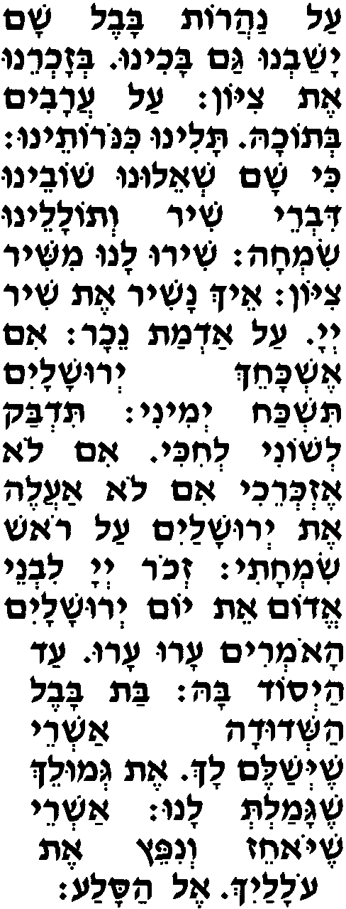 |
В субботу, новомесячья, а также в праздники, отмеченные в Торе, произносят:
Шир амаалот, |
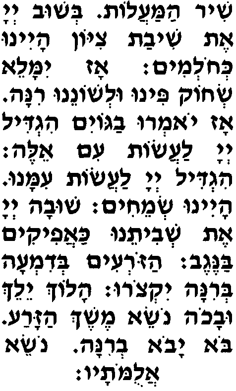 |
Если в трапезе участвовало не менее трех мужчин, один из них провозглашает:
Работай, неварэх. |
Остальные отвечают:
Йеи Шэм А-донай меворах мэата веад олам. |
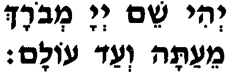 |
Первый:
Йеи Шэм А-донай меворах мэата веад олам. |
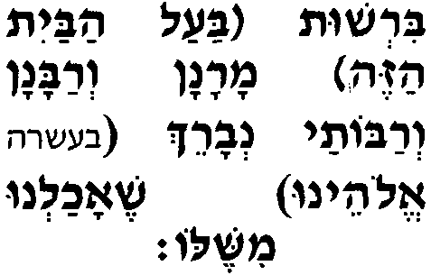 |
Остальные отвечают (и первый повторяет за ними):
Барух (в случае десяти или более участников: Элоэну) шеахалну мишэло увтуво хайину. |
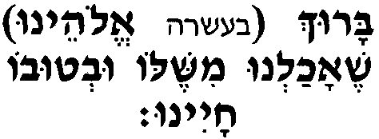 |
Тот, кто присутствует, но не ел с ними, отвечает:
Барух (в случае десяти или более участников: Элоэну) умворах Шемо тамид леолам ваэд. |
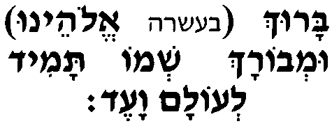 |
Следующие слова не произносит тот, кто ел в одиночестве, но присутствует при этом благословении:
Барух у уварух шемо. |
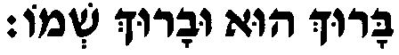 |
При дальнейшем чтении молитвы вслух все присутствующие после каждого благословения произносят: амен.
Барух Ата А-донай Элоэну Мэлэх аолам | 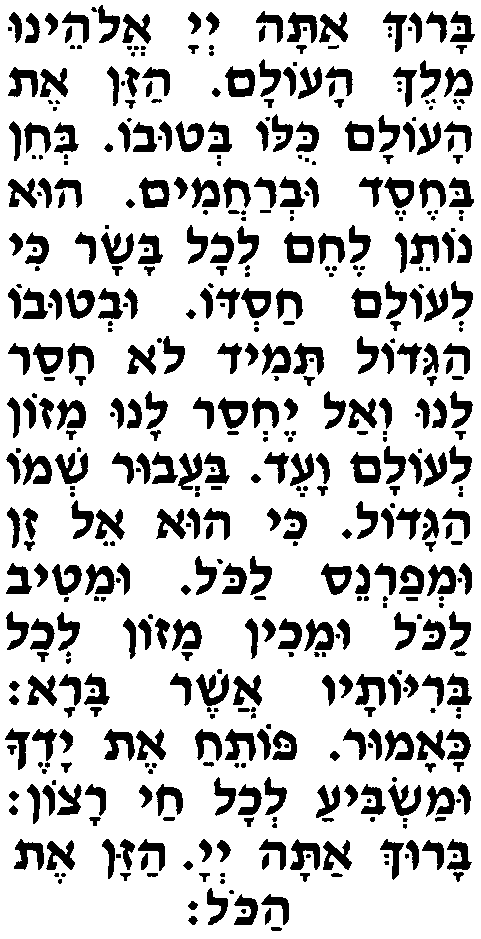 |
Нодэ леха А-донай Элоэну аль шэинхалта лаавотэну эрэц хэмда това урхава |
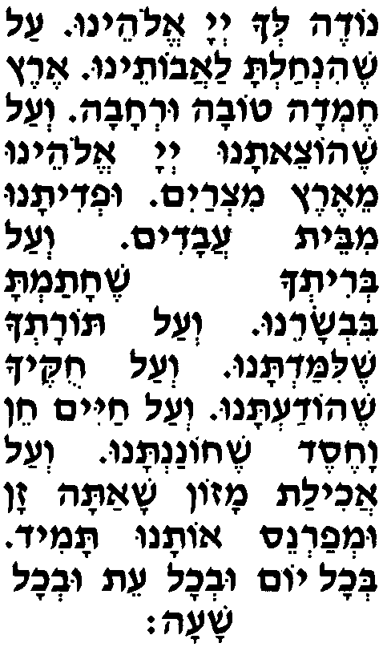 |
В Хануку говорят:
Веаль анисим |
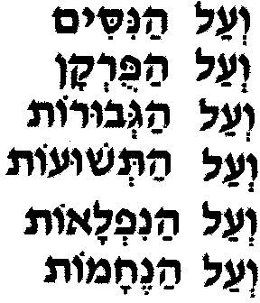 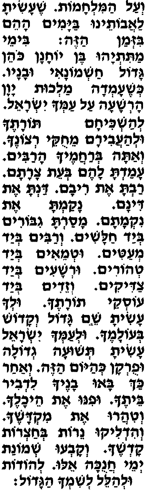 |
В Пурим говорят:
Веаль анисим |
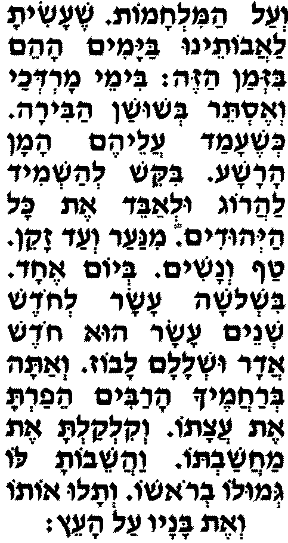 |
Веаль аколь А-донай Элоэну анахну модим лах умварехим отах, |
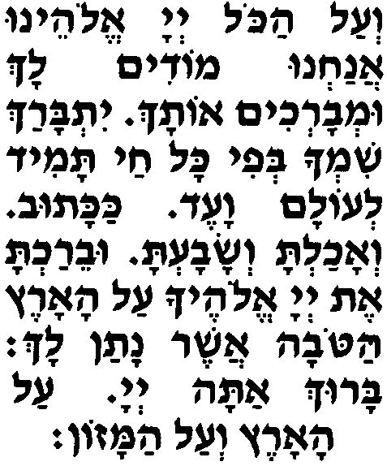 |
Рахэм А-донай Элоэну аль Йисраэль амэха веаль Йерушалайим ирэха веаль Цийон Мишкан кеводэха, |
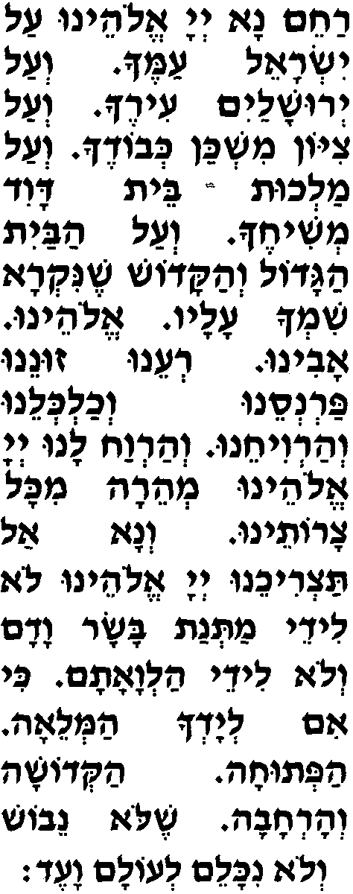 |
В субботу добавляют:
Рецэ веахалицэну А-донай Элоэну бемицвотэха увемицват йом ашевии ашабат агадоль веакадош азэ, |
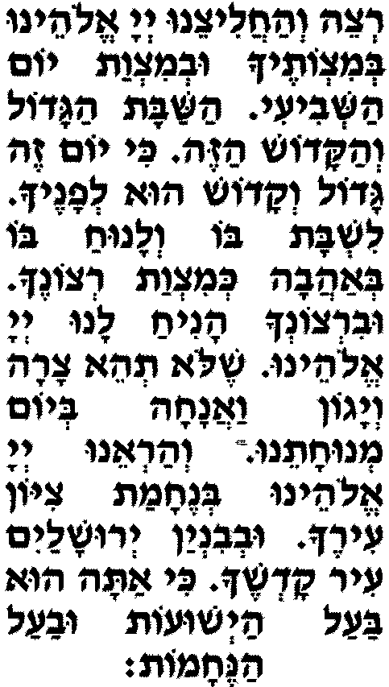 |
В будни переходят к Увнэ Йерушалайим. В новомесячье, праздники и праздничные будни произносят:
Элоэну вЭлоэй авотэну,
яалэ веяво веягиа вейэраэ вейэрацэ вейишама вейипакэд вейизахэр зихронэну уфикдонэну везихрон авотэну везихрон Машиах бэн Давид авдэха везихрон Йерушалайим ир кодешэха везихрон коль амеха бэт Йисраэль лефанэха лифлэта летова лехэн улхэсэд улрахамим лехайим товим улшалом бейом... | 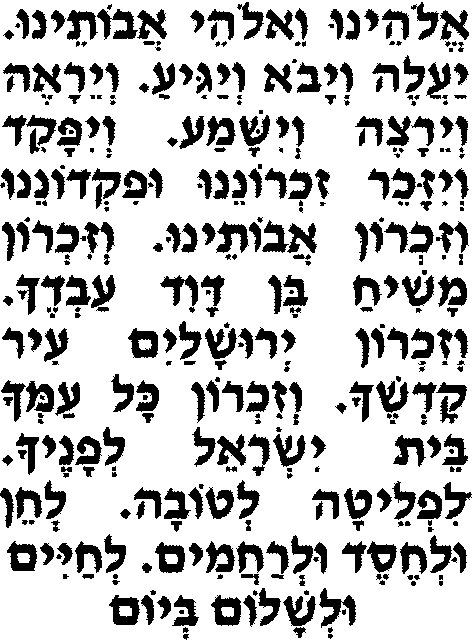 |
в новомесячье: рош аходэш азэ. |
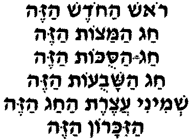 |
Завершение вставки, которую говорят в новомесячье, праздники и праздничные будни:
Зохрэну А-донай Элоэну бо летова уфокдэну во ливраха веошиэну во лехайим товим, | 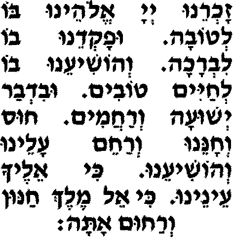 |
Увнэ Йерушалайим ир акодэш бимэра веямэну. |
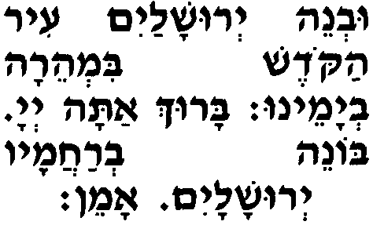 |
Барух Ата А-донай Элоэну Мэлэх аолам |
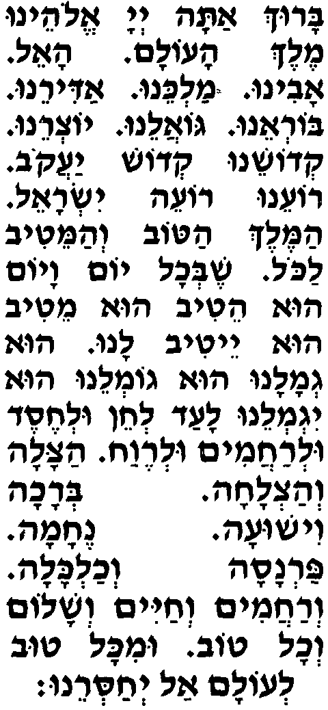 |
Арахаман у йимлох алэну леолам ваэд. |
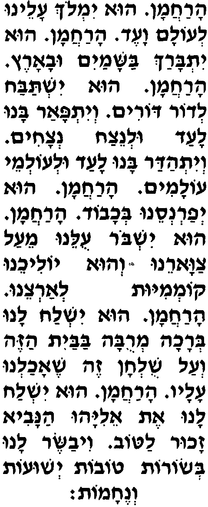 |
Сидящий за столом в доме, где не он хозяин, произносит:
Арахаман у йеварэх эт (ави мори) бааль абайит азэ веэт (ими морати) баалат абайит азэ, |
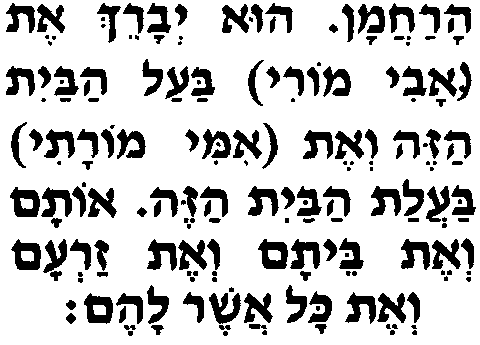 |
Сидящий за своим столом говорит:
Арахаман у йеварэх оти (веэт ави веэт ими) веэт ишти веэт зари веэт коль ашэр ли... |
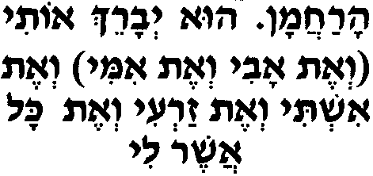 |
Отану веэт коль ашэр лану, |
 |
Бамаром йеламеду алээм веалэну зехут шэтеэ лемишмэрэт шалом |
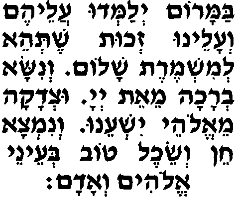 |
В субботу:
Арахаман у янхилэну йом шэкуло шабат умнуха лехайэй аоламим. |
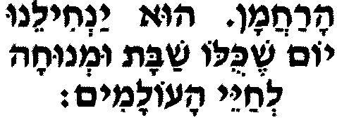 |
В новомесячье:
Арахаман у йехадэш алэну эт аходэш азэ летова уливраха. |
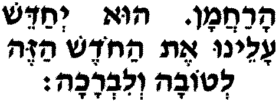 |
В праздник:
Арахаман у янхилэну йом шэкуло тов. |
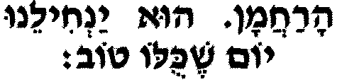 |
На Новый год:
Арахаман у йехадэш алэну эт ашаиа азот летова уливраха. |
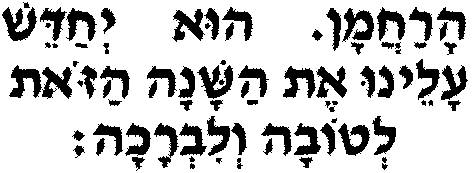 |
В Сукот:
Арахаман у яким лану эт сукат Давид анофэлэт. |
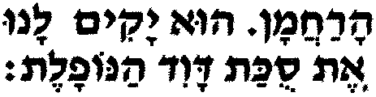 |
Арахаман у йезакэну лимот аМашиах улехайэй аолам аба. |
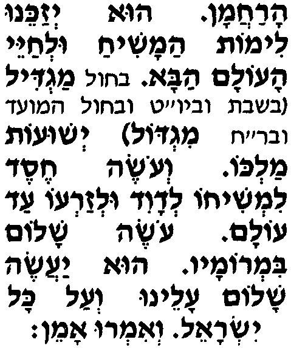 |
Йеру эт А-донай кедошав, ки эн махсор лирэав. |
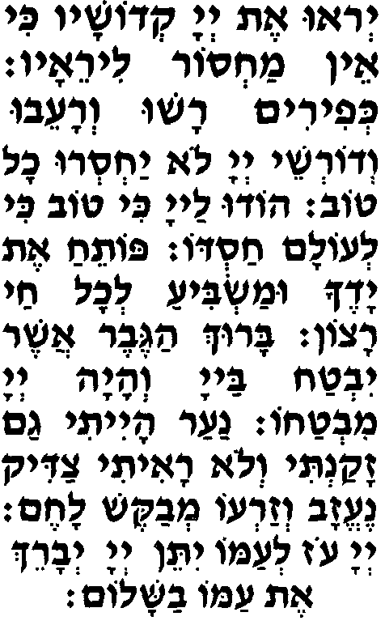 |